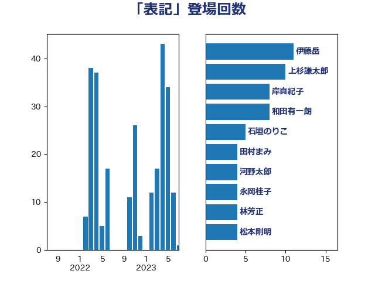

単語「表記」

| 伊藤岳 | 日本共産党 | 11 回 |
| 上杉謙太郎 | 自由民主党 | 10 回 |
| 岸真紀子 | 立憲民主党 | 8 回 |
| 和田有一朗 | 日本維新の会 | 8 回 |
| 石垣のりこ | 立憲民主党 | 5 回 |
| 田村まみ | 国民民主党 | 4 回 |
| 河野太郎 | 自由民主党 | 4 回 |
| 永岡桂子 | 自由民主党 | 4 回 |
| 林芳正 | 自由民主党 | 4 回 |
| 松本剛明 | 自由民主党 | 4 回 |
| 小沼巧 | 立憲民主党 | 4 回 |
| 寺田稔 | 自由民主党 | 4 回 |
| 奥下剛光 | 日本維新の会 | 4 回 |
| 中谷一馬 | 立憲民主党 | 4 回 |
| 馬場雄基 | 立憲民主党 | 3 回 |
| 緒方林太郎 | 無所属 | 3 回 |
| 福山哲郎 | 立憲民主党 | 3 回 |
| 岸田文雄 | 自由民主党 | 3 回 |
| 塩川鉄也 | 日本共産党 | 3 回 |
| 鬼木誠 | 立憲民主党 | 2 回 |
| 須藤元気 | 無所属 | 2 回 |
| 赤嶺政賢 | 日本共産党 | 2 回 |
| 谷合正明 | 公明党 | 2 回 |
| 西岡秀子 | 国民民主党 | 2 回 |
| 若宮健嗣 | 自由民主党 | 2 回 |
| 秋葉賢也 | 自由民主党 | 2 回 |
| 牧山ひろえ | 立憲民主党 | 2 回 |
| 森山浩行 | 立憲民主党 | 2 回 |
| 梅村聡 | 日本維新の会 | 2 回 |
| 柳ヶ瀬裕文 | 日本維新の会 | 2 回 |
| 杉本和巳 | 日本維新の会 | 2 回 |
| 杉尾秀哉 | 立憲民主党 | 2 回 |
| 本庄知史 | 立憲民主党 | 2 回 |
| 山田太郎 | 自由民主党 | 2 回 |
| 山本太郎 | れいわ新選組 | 2 回 |
| 堤かなめ | 立憲民主党 | 2 回 |
| 坂本祐之輔 | 立憲民主党 | 2 回 |
| 倉林明子 | 日本共産党 | 2 回 |
| 仁木博文 | 無所属 | 2 回 |
| 中川康洋 | 公明党 | 2 回 |
| 中島克仁 | 立憲民主党 | 2 回 |
| 齋藤健 | 自由民主党 | 1 回 |
| 鶴保庸介 | 自由民主党 | 1 回 |
| 高木真理 | 立憲民主党 | 1 回 |
| 音喜多駿 | 日本維新の会 | 1 回 |
| 青山大人 | 立憲民主党 | 1 回 |
| 階猛 | 立憲民主党 | 1 回 |
| 阿部司 | 日本維新の会 | 1 回 |
| 鎌田さゆり | 立憲民主党 | 1 回 |
| 鈴木義弘 | 国民民主党 | 1 回 |
| 鈴木俊一 | 自由民主党 | 1 回 |
| 逢坂誠二 | 立憲民主党 | 1 回 |
| 輿水恵一 | 公明党 | 1 回 |
| 藤巻健太 | 日本維新の会 | 1 回 |
| 落合貴之 | 立憲民主党 | 1 回 |
| 菊田真紀子 | 立憲民主党 | 1 回 |
| 芳賀道也 | 国民民主党 | 1 回 |
| 舩後靖彦 | れいわ新選組 | 1 回 |
| 穀田恵二 | 日本共産党 | 1 回 |
| 神田憲次 | 自由民主党 | 1 回 |
| 礒崎哲史 | 国民民主党 | 1 回 |
| 石田昌宏 | 自由民主党 | 1 回 |
| 石川大我 | 立憲民主党 | 1 回 |
| 田村貴昭 | 日本共産党 | 1 回 |
| 漆間譲司 | 日本維新の会 | 1 回 |
| 源馬謙太郎 | 立憲民主党 | 1 回 |
| 泉健太 | 立憲民主党 | 1 回 |
| 河西宏一 | 公明党 | 1 回 |
| 池下卓 | 日本維新の会 | 1 回 |
| 横沢高徳 | 立憲民主党 | 1 回 |
| 梅谷守 | 立憲民主党 | 1 回 |
| 柳本顕 | 自由民主党 | 1 回 |
| 東徹 | 日本維新の会 | 1 回 |
| 新藤義孝 | 自由民主党 | 1 回 |
| 打越さく良 | 立憲民主党 | 1 回 |
| 市村浩一郎 | 日本維新の会 | 1 回 |
| 川田龍平 | 立憲民主党 | 1 回 |
| 尾身朝子 | 自由民主党 | 1 回 |
| 小沢雅仁 | 立憲民主党 | 1 回 |
| 小林鷹之 | 自由民主党 | 1 回 |
| 大西健介 | 立憲民主党 | 1 回 |
| 大島九州男 | れいわ新選組 | 1 回 |
| 大串正樹 | 自由民主党 | 1 回 |
| 國重徹 | 公明党 | 1 回 |
| 吉良よし子 | 日本共産党 | 1 回 |
| 吉田統彦 | 立憲民主党 | 1 回 |
| 古屋範子 | 公明党 | 1 回 |
| 勝目康 | 自由民主党 | 1 回 |
| 中田宏 | 自由民主党 | 1 回 |
| 上野通子 | 自由民主党 | 1 回 |
| 三浦信祐 | 公明党 | 1 回 |